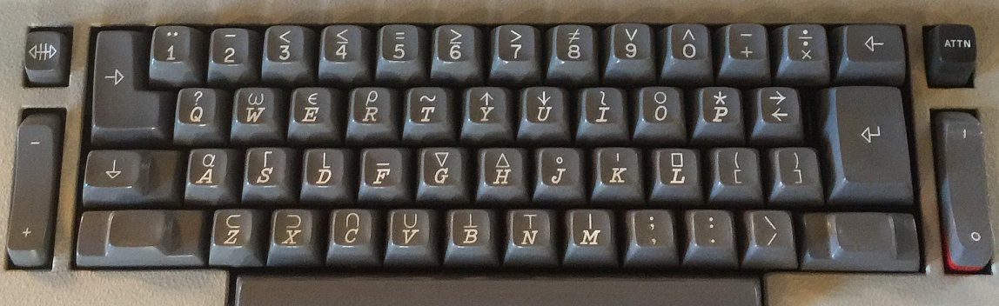
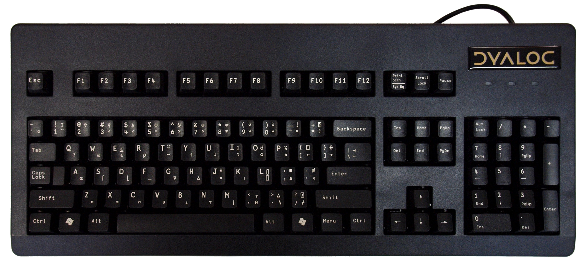

1 intro to apl
- phoebe jenkins
- dog star some places online, @rats_god twitter
2 about me
- just an apl enthusiast, not a professional, not a representative
- started messing around with it because it was unlike anything else i'd used
- find it very fun and will try to convey that
- maybe you will find it fun too
3 some background
3.1 what you might know
- a programming language
- terse
- old (1950s/1960s)
- funny characters

3.2 what you might not know
- "a programming language"
- based on an alternative mathematical notation by Kenneth Iverson
- surprisingly modern features!
- still used!
- beloved by those who use it, afaik!
- similar to r, numpy (so i hear)

3.3 implementations
- dyalog
- leading, modern, proprietary, free
- gnu apl
- open-source, behind times last i checked
- ngn/apl
- open-source, modern, javascript
- NARS2000
- experimental, windows, ???
- others
- ???
- will be focusing on dyalog in this presentation
4 demo
4.1 prime number algorithm
z{(~⍺∊⍵)/⍺}{⍵∘.×⍵}z←1↓⍳100
(huh?)
4.2 dyalog demo
[ switch to dyalog ]
4.3 more features we didn't show!
- tacit programming
- imperative programming
- declarative programming
- higher-order functions (aka operators/adverbs)
- recursion and anonymous recursion
- guards, try/catch
- parallel programming
- currying
5 larger culture
5.1 related languages
- j
- more symbols
- focus on numerical programming
- tacit programming
- k
- fewer symbols
- designed for speed
- more general-purpose
- both (mostly) use only ascii characters
5.2 psychology
- works really well in repl
- lots of languages claim this, i only felt this to be true for apl
- write complete, non-trivial programs without opening up a text editor
5.3 psychology
- 'notation as a tool of thought'
- paper / lecture by kenneth iverson, 1979
- "By relieving the brain of all unnecessary work, a good notation sets it free to concentrate on more advanced problems" A.N. Whitehead
- programming languages are languages, not just for communicating with computers, but other humans, ourselves in the future, ourselves in the present
- apl seeks to communicate ideas well, and make ideas easy to work with
5.4 psychology
- un-directed programming
- as written up by Aaron Hsu

6 tryapl.org
- tryapl.org: approachable in-browser repl
- the apl orchard: friendly chat room
(ok im done)